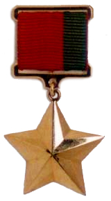
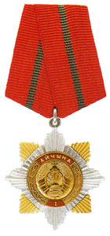
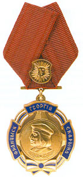
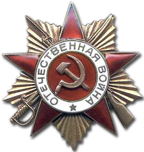

Здесь вас ждет настоящий парад блеска и отваги — от суровых партизанских наград до главных современных орденов и медалей Беларуси!

Медаль "Герой Беларуси".
Медаль «Герой Беларуси» была учреждена в 1995 году и является высшей степенью отличия в стране, присуждаемой за исключительные заслуги перед государством и обществом. Первым этой награды в 1996 году был посмертно удостоен военный летчик Владимир Карват, который ценой собственной жизни увел падающий самолет от жилых домов. В 2014 году звание получила биатлонистка Дарья Домрачева, ставшая первой in истории женщиной-Героем Беларуси после триумфального завоевания трех золотых медалей на Олимпийских играх в Сочи.

Орден Отечества.
Орден Отечества является высшим орденом Республики Беларусь, который имеет три степени и присуждается последовательно (от III к I) за выдающиеся заслуги в развитии страны, укреплении ее могущества или проявленное мужество. Легендарная спортсменка Екатерина Карстен (академическая гребля) вошла в историю как самый первый полный кавалер этого ордена, получив все три его степени после своих многочисленных олимпийских триумфов. Видный государственный деятель и соратник президента Виктор Шейман также был удостоен этой высшей награды в разные периоды своей карьеры за вклад в государственное строительство и обеспечение национальной безопасности.

Орден Франциска Скорины.
Орден Франциска Скорины — одна из первых государственных наград независимой Беларуси, учрежденная в 1995 году для поощрения за выдающиеся заслуги в развитии национальной культуры, искусства, науки и благотворительности. Первым кавалером ордена in 1997 году стал легендарный белорусский художник Михаил Савицкий, а среди других знаменитых белорусов этой награды удостоен культовый музыкант и создатель ансамбля «Песняры» Владимир Мулявин.

Орден Отечественной войны.
Орден Отечественной войны — это первая советская награда, учрежденная в период Великой Отечественной войны (в мае 1942 года), которая вручалась за мужество, храбрость и партизанские заслуги в освобождении родины, включая территорию Беларуси. Этим орденом I степени были награждены выдающиеся белорусские подпольщики и партизанские лидеры: Пётр Миронович Машеров (руководитель подполья в Россонах), Кирилл Трофимович Мазуров (член Минского подпольного обкома) и посмертно Вера Захаровна Хоружая (один из главных символов белорусского Сопротивления).